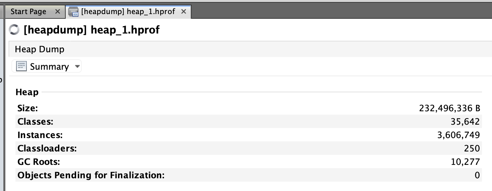
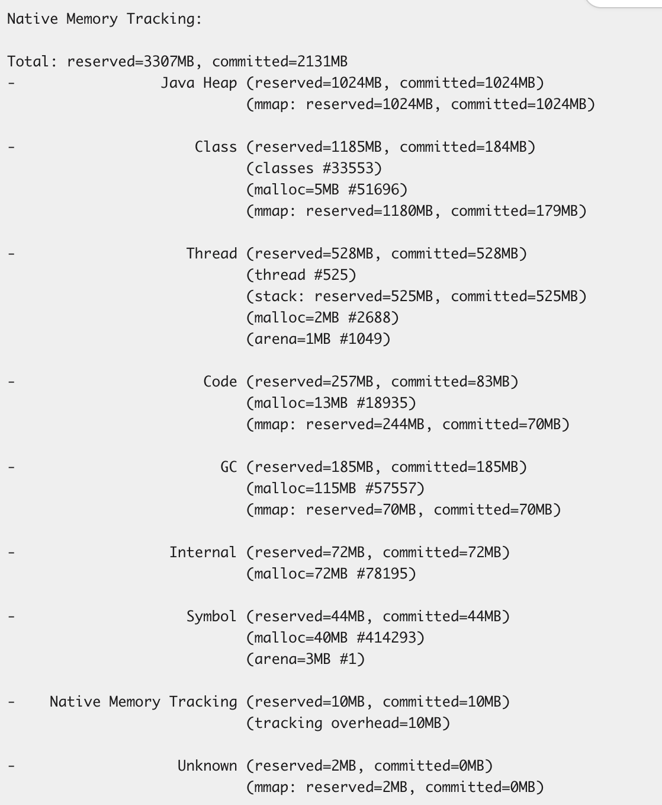
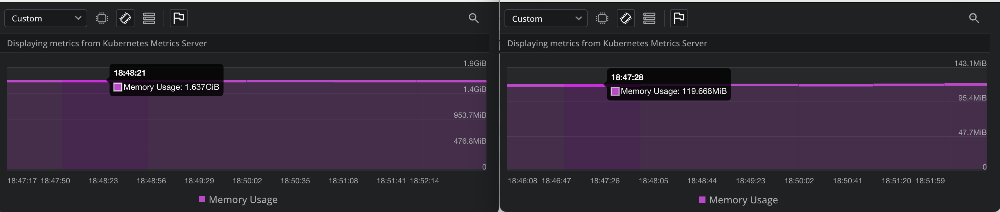
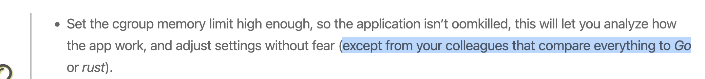

JVM memory
Vấn đề
Tuần rồi được một đồng nghiệp hỏi về việc service hay bị OOM (Out Of Memory) trên môi trường DEV, vừa hay tháng trước học lý thuyết về JVM nên nay mang vào thực hành thử, trong quá trình làm thì nhận có nhiều thứ bản thân đang hiểu sai hoặc chưa hiểu rõ.
Một số ngữ cảnh của service:
- Mã nguồn Java 8.
- Sử dụng G1C garbage collector.
- Webserver xài Tomcat truyền thống, webclient xài Webflux với Netty.
- Triển khai trên k8s với sidecar pattern, istio proxy.
Đầu tiên thì thấy container service bị OOMKilled:
- Pod không bị xoá đi.
- Container bị restart nhiều lần bởi k8s do vượt quá giới hạn bộ nhớ được thiết lập.
Vào xem memory của container thì đúng là loanh quanh 2GiB, vừa đúng với giá trị giới hạn. Vậy có phải do ứng dụng có vấn đề hay con số 2GiB quá thấp?
Bước đầu tiên nghĩ tới là heapdump:
jcmd 1 GC.heap_dump <path>
Điều bất ngờ là kết quả của heapdump chỉ loanh quanh 250MB.

Con số khá nhỏ so với 2GiB, vậy phải tiếp tục sử dụng chế độ theo dõi memory của JVM để nghiên cứu tiếp. Khi chạy chương trình, cần thêm tuỳ chọn sau:
-XX:NativeMemoryTracking=summary
Sau đó, có thể sử dụng lệnh jcmd để lấy thông tin:
jcmd <pid> VM.native_memory summary scale=MB

Thoạt đầu nhìn vào phần Total, thấy con số committed: 2131MB còn lớn hơn cả giới hạn 2GiB của container, thấy cũng hơi lạ, tại vì mình đang vào bên trong container để chạy lệnh mà, nếu lơn hơn thì container đã bị kill và mình không thể truy cập được rồi.
Ok bắt đầu đi tìm hiểu về các con số trong phần kết quả này, thì thấy JVM có 1 bug liên quan đến NMT (Native Memory Tracking) trên các phiên bản Java 8 cũ:
Cụ thể là con số committed trong phần stack memory được hiển thị bằng với số reserved. Vậy kết luận đầu tiên là giá trị committed ở phần Total sẽ phải nhỏ hơn số trong hình.
Reserved vs Committed
Trước khi đi tiếp thì cần hiểu về 2 khái niệm reserved và committed trong quản lý bộ nhớ của JVM:
Reserved memory: kích thước vùng nhớ được đảm bảo bởi OS là sẽ sẵn sàng cung cấp cho JVM nếu được yêu cầu, có thể hiểu là lời hứa :V.Committed memory: kích thước vùng nhớ thực tế đã được OS cấp phát cho JVM để sử dụng.
Vậy nên, reserved luôn luôn lớn hơn hoặc bằng committed.
Trong 2 số trên thì giá trị committed sẽ được k8s sử dụng để so sánh với giới hạn bộ nhớ của container.
Câu hỏi quan trọng: có phải tất cả vùng nhớ trong phần committed đều đang chứa dữ liệu (objects, metadata,...), có thể hiểu là đang được sử dụng?
Ban đầu thì cũng nghĩ là vậy, cho tới khi hiểu được ý nghĩa của nó và xem lại file heapdump ở trên. Câu trả lời chính xác là không, JVM có thể đánh dấu sở hữu vùng nhớ nhưng không nhất thiết phải cấp phát dữ liệu lên đó.
Giải pháp
Nhìn vào phần Heap thì thấy giá trị committed bằng với reserved là 1Gib, chiếm 50% số giới hạn của container, con số này được cấu hình từ đâu?
Khi nghiên cứu về process JVM thì có một vài lệnh quan trọng để xem các thông số cấu hình:
jcmd <pid> VM.flags
jcmd <pid> VM.command_line
Sau khi chạy 2 lệnh trên thì thấy có một cấu hình liên quan tới Heap, đó là -XX:MaxRAMFraction=2.
MaxRAMFraction: xác định tỷ lệ phần trăm bộ nhớ vật lý tối đa mà JVM có thể sử dụng cho Heap, giá trị mặc định là4, tức là 25% bộ nhớ vật lý.
Cấu hình này giải thích giá trị reserved của Heap là 1Gib, vì giới hạn bộ nhớ của container là 2Gib.
Quay lại với giá trị thật sự sử dụng của Heap, vì chỉ loanh quanh 250MB nên nghĩ về phương án đầu tiên là làm yêu cầu JVM trả vùng nhớ về cho OS khi không sử dụng, tìm kiếm trên mạng thì thấy có vài cấu hình như sau:
-XX:MinHeapFreeRatio
-XX:MaxHeapFreeRatio
-XX:G1MaxUncommittedCapacity
Tuy nhiên mang vào xài thử thì có option không được hỗ trợ, còn lại thì không hoạt động.
Cuối cùng nghĩ lại thấy Heap xài ít quá, mình giảm phần reserved của Heap xuống còn 512MB bằng cách sử dụng:
-XX:MaxRAMFraction=4
Và kết quả thì bộ nhớ của toàn ứng dụng đã giảm xuống mức an toàn.
- Bên trái: service container.
- Bên phải: istio-proxy container.

Tuy nhiên, sau vài ngày thì ứng dụng có xu hướng tăng chậm bộ nhớ, mình xem thử lại về native memory tracking thì thấy các phần trong JVM report không khác nhiều lắm, vậy nguyên nhân nằm ở phần khác.
Off-heap memory
Thực sự heap chỉ là một phần trong tổng bộ nhớ của JVM và được quản lý trực tiếp bởi JVM, còn một số phần native memory khác không được thể hiện trong báo cáo của JVM, ví dụ như:
- MappedByteBuffer (Mapped files).
- Native libraries allocations (các thư viện C).
- Malloc overhead
Để theo dõi các phần này thì có thể sử dụng công cụ pmap.
Nhìn về tổng quan thì tổng bộ nhớ của container sẽ bao gồm các phần sau:
Total memory = Heap + GC + Metaspace + Code Cache + Symbol tables
+ Compiler + Other JVM structures + Thread stacks
+ Direct buffers + Mapped files +
+ Native libraries allocations + Malloc overhead
+ ...
Sẽ cần tiếp tục nghiên cứu về phần Off-heap memory này trong các bài sau, vì đây là chủ đề phức tạp, cần phải ôn lại kiến thức quản lý bộ nhớ trong hệ điều hành nữa 😳, điểm danh sơ sơ qua là thấy cần xem thêm về:
- Virtual memory vs Physical memory.
- Memory paging.
- Resident Set Size (RSS).
- Cgroup memory limit.
Và bash script để múa nữa :)).
Tổng kết
Qua quá trình tìm hiểu này, nhận ra được vấn đề nắm được lý thuyết là cực kì quan trọng, có những thứ nhìn vậy nhưng không phải vậy, ví dụ phần committed memory của stack ở Java 8.
Hiểu được tổng thể các vùng nhớ này cũng giúp đưa ra quyết định là xin thêm RAM cho service hay là tối ưu lại ứng dụng.
